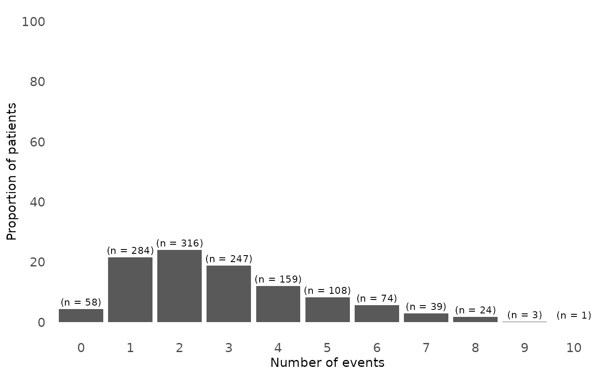
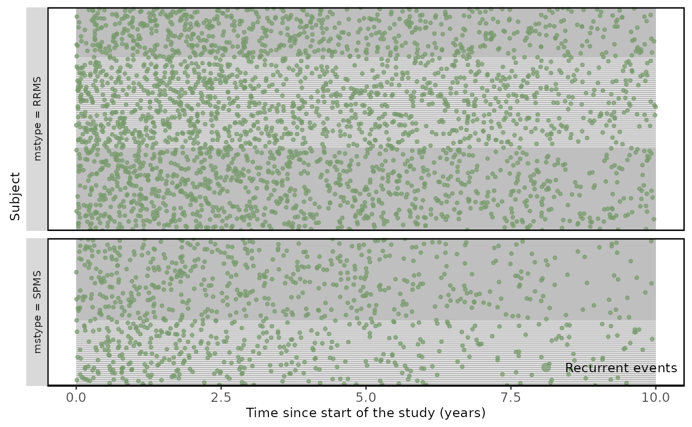
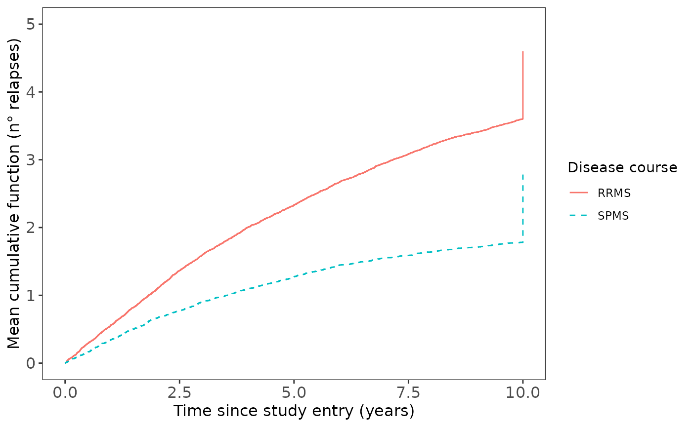

03. Descriptive analyses in recurrent event endpoints
descriptive_analyses.Rmd
# Loading libraries
library(revents)
library(dplyr)
library(gtsummary)
library(reda)
library(reReg)
library(tibble)
library(tidyr)
library(ggplot2)
# Load the simulated data
data("df_revents", package = "revents")
df_revents <- revents::df_reventsDescriptive analyses can be performed with the raw data generated in the previous step but also by using the modified layouts. In this example, raw simulated data was used to explain the main characteristics of the study population and how to describe recurrent events accurately with mean cumulative function graph.
head(df_revents)
#> # A tibble: 6 × 11
#> ...1 id Age Sex Race Time_since_diagnosis EDSS_overall status time
#> <dbl> <dbl> <dbl> <chr> <chr> <dbl> <dbl> <dbl> <dbl>
#> 1 1 1 41.3 Male White 6.10 0.373 1 0.253
#> 2 2 1 41.3 Male White 6.10 0.373 1 0.450
#> 3 3 1 41.3 Male White 6.10 0.373 1 2.53
#> 4 4 1 41.3 Male White 6.10 0.373 0 10
#> 5 5 2 31.4 Female White 3.37 6.03 1 0.233
#> 6 6 2 31.4 Female White 3.37 6.03 1 1.16
#> # ℹ 2 more variables: mstype <chr>, outcome <chr>However, it is necessary to modify the raw dataset to count the number of events per individual and to pivot it to have one row per individual.
#Count number of events
df_temp <- df_revents %>%
group_by(id,outcome) %>%
mutate(cumevent = cumsum(status),
tot_event = max(cumevent))
#Pivot the dataset
df_temp <- df_temp %>%
dplyr::select(id, outcome, tot_event) %>%
distinct() %>%
pivot_wider(
names_from = outcome,
values_from = tot_event
)
#Create a dataset with one row per individual (mainly used for descriptive statistics)
one_row_df <- df_revents %>%
dplyr::select(id,
mstype,
Age,
Sex,
Race,
Time_since_diagnosis,
EDSS_overall) %>%
inner_join(df_temp, by = "id") %>%
distinct()Baseline characteristics
From the total simulated participants, 60.2% (721/1313) had a RRMS diagnosis while the remaining 39.8% (522/1313) had a SPMS diagnosis. The mean age of the RRMS population is lower than the SPMS population. Most of participants were female and white in both groups. The SPMS group exhibited a longer mean duration since diagnosis, averaging 24 years. Additionally, their mean EDSS score was higher (mean = 6.5).
Regarding the outcome description for both groups, there were a total of 1255 relapses at the end of the follow-up. In this simulation, the 73.9 (971/1313) of participants had at least more than one relapses, with a maximum of 10 relapses observed (Table 1). The proportion of events per group started to be different after the 4th event, in which the higher number of relapses was observed in the RRMS group.
one_row_df$RELAPSE <- factor(one_row_df$RELAPSE)
descriptive_table <-
one_row_df %>%
droplevels() %>%
tbl_summary(include = c(Age,
Sex,
Race,
Time_since_diagnosis,
EDSS_overall,
RELAPSE),
by = mstype,
statistic = list(
all_continuous() ~ "{mean} ({sd})"
),
digits = all_continuous() ~ 1,
label = list(
Age = "Age (years)",
Sex = "Sex",
Race = "Race",
EDSS_overall = "EDSS overall",
mstype = "Disease course",
Time_since_diagnosis = "Time since diagnosis (years)",
RELAPSE = "n° of relapses"
),
missing_text = "(Missing)") %>%
modify_header(label = "**Characteristics**") %>%
modify_caption("**Baseline characteristics** (N = {N})") %>%
bold_labels() %>%
italicize_levels()Table 1. Baseline characteristics of study population by disease course.
# Print the table
descriptive_table| Characteristics | RRMS, N = 7911 | SPMS, N = 5221 |
|---|---|---|
| Age (years) | 36.6 (9.5) | 49.3 (8.5) |
| Sex | ||
| Female | 554 (70%) | 352 (67%) |
| Male | 237 (30%) | 170 (33%) |
| Race | ||
| No white | 86 (11%) | 16 (3.1%) |
| White | 705 (89%) | 506 (97%) |
| Time since diagnosis (years) | 3.1 (3.3) | 24.0 (31.7) |
| EDSS overall | 3.0 (3.5) | 6.5 (2.5) |
| n° of relapses | ||
| 0 | 28 (3.5%) | 30 (5.7%) |
| 1 | 93 (12%) | 191 (37%) |
| 2 | 135 (17%) | 181 (35%) |
| 3 | 144 (18%) | 103 (20%) |
| 4 | 142 (18%) | 17 (3.3%) |
| 5 | 108 (14%) | 0 (0%) |
| 6 | 74 (9.4%) | 0 (0%) |
| 7 | 39 (4.9%) | 0 (0%) |
| 8 | 24 (3.0%) | 0 (0%) |
| 9 | 3 (0.4%) | 0 (0%) |
| 10 | 1 (0.1%) | 0 (0%) |
| 1 Mean (SD); n (%) | ||
Figure 1. Distribution of number of relapses in study population
### Number of relpases bar chart ###
relapse_counts_plot <- one_row_df %>%
group_by(RELAPSE) %>%
summarise(count = n()) %>%
mutate(proportion = count / sum(count) * 100)
number.relapses <- ggplot(relapse_counts_plot, aes(x = factor(RELAPSE), y = proportion)) +
geom_bar(stat = "identity") +
geom_text(aes(label = paste0("(n = ", count, ")")), vjust = -0.5, size = 3) +
labs(x = "Number of events", y = "Proportion of patients") +
theme_minimal() +
scale_fill_manual(values = c("Relapses" = "red")) +
scale_y_continuous(breaks = seq(0, 100, by = 20), limits = c(0, 100)) +
theme(panel.grid = element_blank(),
legend.position = "none",
axis.text = element_text(size = 11),
axis.title.x = element_text(size = 11),
axis.title.y = element_text(size = 11))
print(number.relapses)
Here we can see that general distribution of relapses in the study population, in order to have a first idea of the data distribution. The majority of participants had 2 relapse at the end of the follow-up and the proportion of patients with more than 2 relapses decreased as the number of relapses increased.
An improved way to illustrate the recurrent events, is by using the plotEvent and Recur functions from reReg and Reda packages. Recur package provides several types of plots that are recommended for recurrent event endpoints such as relapses (https://www.sychiou.com/reReg/articles/reReg-plot.html) as it gives a better understanding and finding patterns in recurrent event data.
Figure 2. Recurrent relapses during following-up.
comparison_group <- plotEvents(Recur(
time, id, status) ~ mstype,
data = df_revents)
labels <- c("RRMS", "SPMS")
comparison_group +
facet_grid(
mstype ~ .,
scales = "free",
space = "free",
switch = "both",
labeller = labeller(labels, label_parsed)
) +
xlab("Subject") +
ylab("Time since start of the study (years)") +
theme(
axis.text = element_text(size = 10),
legend.text = element_text(size = 10),
axis.title = element_text(size = 10),
legend.title = element_text(size = 10),
strip.text = element_text(size = 8),
panel.border = element_rect(color = "black", fill = NA, linewidth = 1)
)
Mean cumulative function
To describe recurrent event data was also estimated the mean cumulative function (MCF), which is recommended for illustrating recurrent events compared with the Kaplan–Meier curves that only look at the first event. The MCF represents the average number of cumulative events experienced by an individual in the study at each point in time since the start of follow-up.
For performing this function, it can be used both the row data (df_revents) or data layout 1 (database layout section) as it only will need the event time or TSTOP, respectively.
Overall, figure 1 shows how the cumulative rates of relapses in RRMS and SPMS groups varies over time. The x-axis is the time since study entry in years and the y-axis represents the average number of relapses that an individual had experienced during follow-up.
# Load data layout corresponding to the third layout
data("data_layout_1", package = "revents")
data_layout_1 <- revents::data_layout_1For example, in the year 5, the MCF value in RRMS is close to 2, which means that RRMS patients experienced, on average, 2 relapses over the first 5 years of follow-up in the study compared with the MCF of 1 (average of 1 relapse) for SPMS diagnostic patients at the same year. Therefore, from this graph we can broadly see that the RRMS group doubles the avareage number of relapses compared to the SPMS group.
From this graph also it is possible to extract information related to the relapse rates over time, which is useful for several recurrent event models’ assumptions. In this case, it can be also seen that cumulative mean of relapses are approximately linear in both groups, suggesting a constant rates of events over time.
# origin: time origin of all subjects (0 default)
# recur function from reda packagem
# check none to avoid errors (subjects having events at or after censoring)
mcf.relapse <- mcf(Recur(TSTOP, ID, STATUS, origin = 0, check = "none") ~ DISEASE_COURSE, data = data_layout_1)
mcf_plot.relapses <-
plot(
mcf.relapse,
mcf = TRUE,
conf.int = FALSE,
lty = 1:4,
legendName = "Disease course"
) +
ggplot2::xlab("Time since study entry (years)") +
ggplot2::ylab("Mean cumulative function (n\u00B0 relapses)") +
ggplot2::theme_bw() +
ggplot2::theme(panel.grid = element_blank(),
axis.text = ggplot2::element_text(size = 12),
axis.title.x = ggplot2::element_text(size = 12),
axis.title.y = ggplot2::element_text(size = 12)) +
ggplot2::scale_y_continuous(breaks = seq(0, 5, by = 1), limits = c(0, 5))Figure 2. Mean Cumulative Function for ARR by disease course.
mcf_plot.relapses